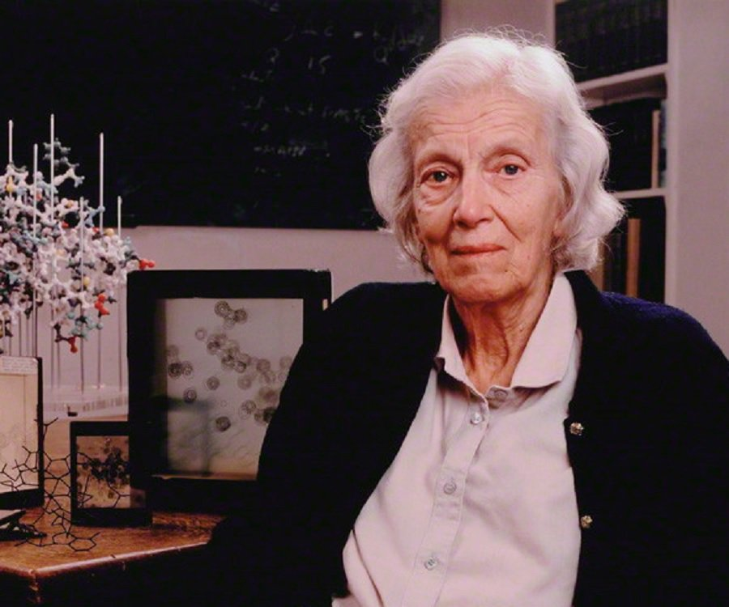

Biography
In the late 1930s Dorothy Crowfoot Hodgkin (1910–1994) became a leading practitioner of the use of X-ray crystallography in determining the three-dimensional structure of complex organic molecules.
At Somerville College, Oxford, she studied physics and chemistry and chose to do her fourth-year research project on X-ray crystallography. She had to crystallize the substance under study, shoot X-rays at the crystal, and then study the way the X-rays were diffracted off the planes of the crystal’s structure. The technique, which involves a lot of mathematical analysis, was developed by Bragg and his son, William Lawrence Bragg, who shared the 1915 Nobel Prize in Physics for their work. Yet X-ray crystallography was still a relatively new technology with many challenges—and hence opportunities for research—when Hodgkin entered the field.
After graduation she studied at Cambridge University with John Desmond Bernal, who had worked for five years with the senior Bragg. She and Bernal collaborated successfully, using X-ray crystallography to determine the three-dimensional structure of several complex organic molecules important to the functioning of living organisms. In 1937 she received her PhD from Cambridge— the same year she married Thomas L. Hodgkin, who became an authority on African history.